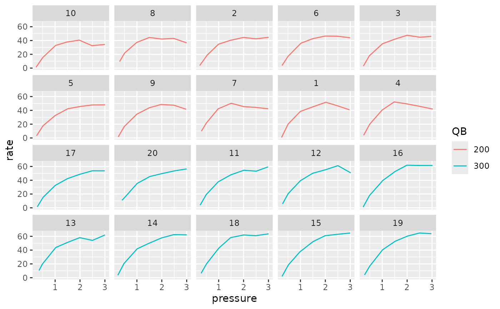
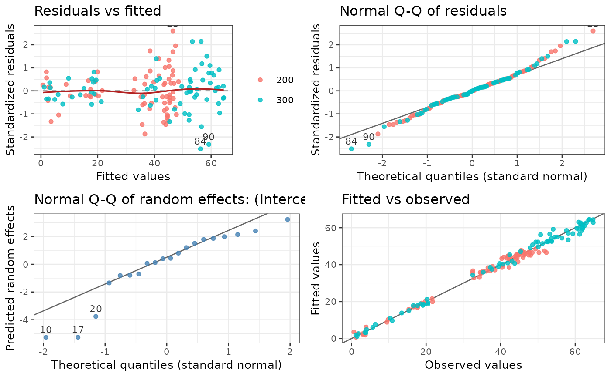
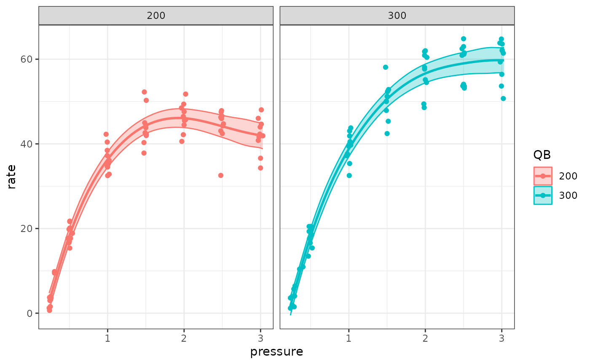
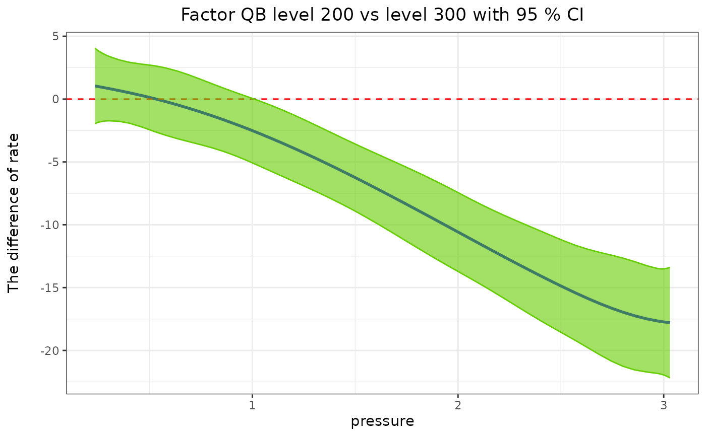
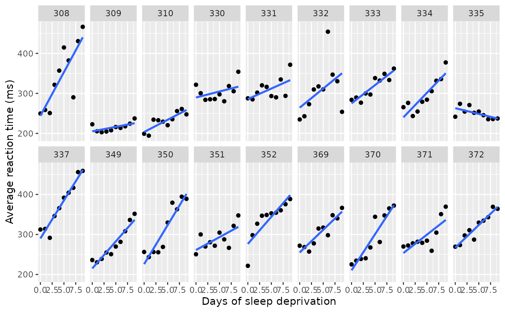
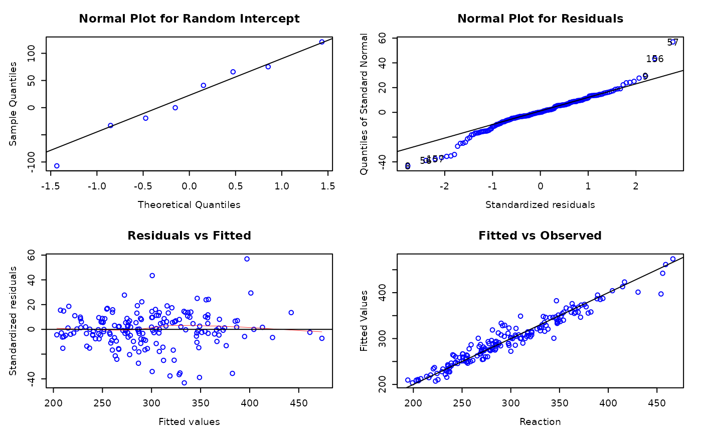
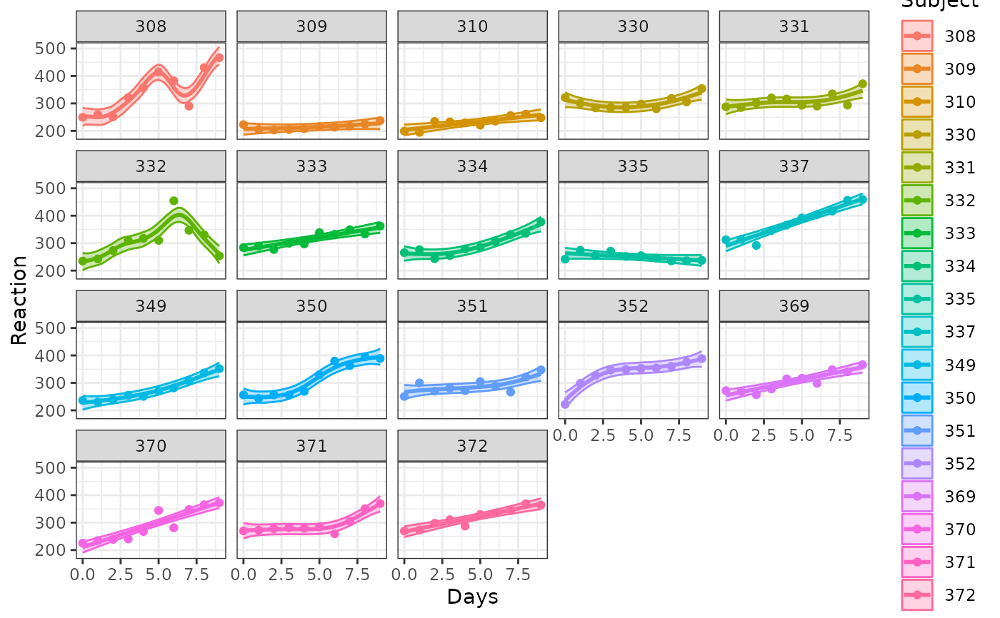
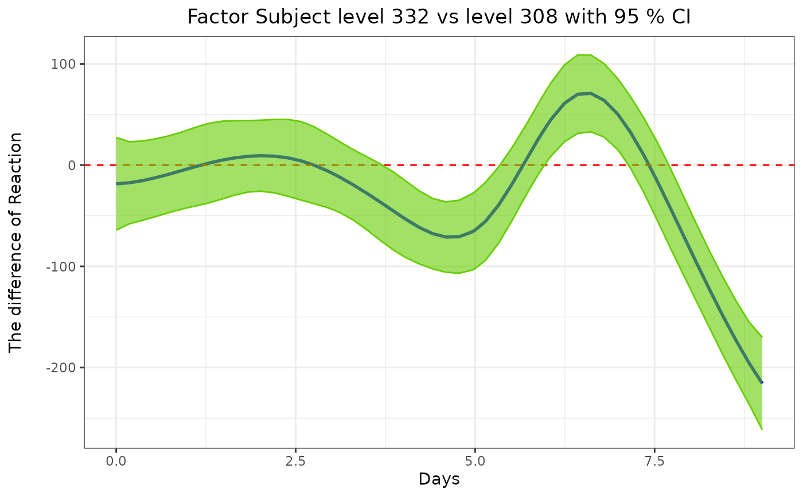

Predicted Means of a Semi Paramatric Model with Covariate Variable(s)
Source:R/semipred.R
semipred.RdThis function produces predicted means with graph for a semi paramatric model with new set of covariate values.
Usage
semipred(semireg, modelterm=NULL, covariate, sm_term=NULL, contr=NULL,
covariateV=NULL, boundary=NULL, level=0.05, trans=NULL, trellis=TRUE,
scales=c("fixed", "free", "free_x", "free_y"),
plotord=NULL, ci=TRUE, point=TRUE, jitterv=0, threeD=FALSE, prt=TRUE,
simultaneous=FALSE)Arguments
- semireg
A list object returned by
semireg.- modelterm
Name (in "quotes") for indicating which factor term's predicted mean to be calculated. The
modeltermmust be given exactly as it appears insemiregmodel, e.g. "A" or "A:B". In casemodeltermis the same ascovariateorNULL, themsemipredwill product predictmeans with CI based oncovariateonly with out any grouping. Factors that are not inmodelterm, includingbyfactors of the smooth terms, are averaged over with equal weights, in both the parametric and the smooth parts of the model.- covariate
Name (in "quotes") of one or two (for
Ztpssmooth) the covariate variables in thesemiregshuch as "x1" or c("x1", "x2").- sm_term
Names (in "quotes") of smooth terms (from
smoothZlist insemiregmodel) used in the prediction such as "sm1_grp" or c("sm1_grp", "sm2_grp"). The default is using all smooth terms which issm_term=NULL.- contr
A numeric (or character) vector with length of two (e.g. c(4, 1) or c("d", "a")) which indicates to produce predicted mean with CI for difference between
modeltermlevel 4 ("d") vs level 1 ("a") alongcovariate.- covariateV
A numeric vector (one covariate) or a matrix with one named column per covariate (two covariates, e.g. for a
Ztpssmooth), then semipred will produce the result forcovariateat value ofcovariateV. Each row of the matrix is one prediction point.- boundary
A matrix or data frame of two columns, used to specify boundary of longitude and latitude, it is functional when the length of covariate is two.
- level
Significance level of the two-sided confidence limits: the default 0.05 gives 95% limits (before version 2.0 the limits used
qnorm(1 - level), i.e. 90%).- trans
A function object for calculating the back transformed means, e.g.
trans=exp.- trellis
A logical scalar. If set to TRUE (default), a trellis plots of predicted means with CI will be drawn.
- scales
Should scales be fixed ("fixed", the default), free ("free"), or free in one dimension ("free_x", "free_y") in a trellis graph?
- plotord
A numeric vector specifying the order of plotting for two way interaction (e.g.
plotord = c(2, 1)will put the second variable inmodeltermon theXaxis, the first variable as the grouping variable, and the third one as the panel variable). The defaults arec(1, 2)for two way interactions.- ci
A logical scalar to indicate whether to print confidence interval. The default value is TRUE.
- point
A logical scalar to indicate whether to print raw data points. The default value is TRUE.
- jitterv
A degree of jitter in x and y direction in the graph. The default is zero.
- threeD
A logical scalar to indicate whether to produce a 3-D plot or not. The default value is FALSE. 3-D plots need package plotly.
- prt
A logical scalar to indicate whether to produce plots on the screen or not. The default value is TRUE.
- simultaneous
If
TRUE, simultaneous confidence bands over the whole curve(s) instead of pointwise limits: the critical value is the1 - levelquantile of the largest standardised deviation over the predicted points, from 10000 draws of the estimates' distribution (Ruppert, Wand and Carroll, 2003). The default is FALSE.
References
Ruppert, D., Wand, M. P. and Carroll, R. J. (2003), Semiparametric Regression, Cambridge University Press.
Examples
library(predictmeans)
data(Dialyzer, package="nlme")
str(Dialyzer)
#> Classes ‘nfnGroupedData’, ‘nfGroupedData’, ‘groupedData’ and 'data.frame': 140 obs. of 5 variables:
#> $ Subject : Ord.factor w/ 20 levels "10"<"8"<"2"<"6"<..: 9 9 9 9 9 9 9 3 3 3 ...
#> $ QB : Factor w/ 2 levels "200","300": 1 1 1 1 1 1 1 1 1 1 ...
#> $ pressure: num 0.24 0.505 0.995 1.485 2.02 ...
#> $ rate : num 0.645 20.115 38.46 44.985 51.765 ...
#> $ index : num 1 2 3 4 5 6 7 1 2 3 ...
#> - attr(*, "formula")=Class 'formula' language rate ~ pressure | Subject
#> .. ..- attr(*, ".Environment")=<environment: R_GlobalEnv>
#> - attr(*, "labels")=List of 2
#> ..$ x: chr "Transmembrane pressure"
#> ..$ y: chr "Ultrafiltration rate"
#> - attr(*, "units")=List of 2
#> ..$ x: chr "(dmHg)"
#> ..$ y: chr "(ml/hr)"
#> - attr(*, "outer")=Class 'formula' language ~QB
#> .. ..- attr(*, ".Environment")=<environment: R_GlobalEnv>
#> - attr(*, "FUN")=function (x)
#> ..- attr(*, "source")= chr "function (x) max(x, na.rm = TRUE)"
#> - attr(*, "order.groups")= logi TRUE
library(ggplot2)
ggplot(Dialyzer, aes(x=pressure, y=rate, col=QB)) +
geom_line() +
facet_wrap(vars(Subject))

fm <- semireg(rate ~ pressure*QB+(pressure|Subject),
smoothZ=list(
qb_grp=smZ(pressure, k=4, by=QB, group=TRUE)
),
data=Dialyzer)
#> boundary (singular) fit: see help('isSingular')
#> Linear mixed model fit by REML ['semerLmerTest']
#> Formula: rate ~ pressure * QB + (pressure | Subject) + (1 | qb_grp.200) +
#> (1 | qb_grp.300)
#> Data: Dialyzer
#> REML criterion at convergence: 711.2453
#> Random effects:
#> Groups Name Std.Dev. Corr
#> Subject (Intercept) 2.583
#> pressure 1.554 0.56
#> qb_grp.200 (Intercept) 27.493
#> qb_grp.300 (Intercept) 25.482
#> Residual 2.197
#> Number of obs: 140, groups: Subject, 20; qb_grp.200, 6; qb_grp.300, 6
#> Fixed Effects:
#> (Intercept) pressure QB300 pressure:QB300
#> 30.908 12.829 7.424 7.131
str(fm$data)
#> 'data.frame': 140 obs. of 6 variables:
#> $ rate : num 0.645 20.115 38.46 44.985 51.765 ...
#> $ pressure : num -1.2975 -1.0325 -0.5425 -0.0525 0.4825 ...
#> $ QB : Factor w/ 2 levels "200","300": 1 1 1 1 1 1 1 1 1 1 ...
#> $ Subject : Ord.factor w/ 20 levels "10"<"8"<"2"<"6"<..: 9 9 9 9 9 9 9 3 3 3 ...
#> $ qb_grp.200: Factor w/ 6 levels "1","2","3","4",..: 1 2 3 4 5 6 1 2 3 4 ...
#> $ qb_grp.300: Factor w/ 6 levels "1","2","3","4",..: 1 2 3 4 5 6 1 2 3 4 ...
#> - attr(*, "pressure_mean")= Named num 1.54
#> ..- attr(*, "names")= chr "pressure"
#> - attr(*, "numeric_var")= chr "pressure"
summary(fm$semer)
#> Linear mixed model fit by REML. t-tests use Satterthwaite's method [
#> semerLmerTest]
#> Formula: rate ~ pressure * QB + (pressure | Subject) + (1 | qb_grp.200) +
#> (1 | qb_grp.300)
#> Data: Dialyzer
#>
#> REML criterion at convergence: 711.2
#>
#> Scaled residuals:
#> Min 1Q Median 3Q Max
#> -2.51549 -0.47839 -0.00357 0.46801 2.60037
#>
#> Random effects:
#> Groups Name Variance Std.Dev. Corr
#> Subject (Intercept) 6.670 2.583
#> pressure 2.414 1.554 0.56
#> qb_grp.200 (Intercept) 755.857 27.493
#> qb_grp.300 (Intercept) 649.313 25.482
#> Residual 4.828 2.197
#> Number of obs: 140, groups: Subject, 20; qb_grp.200, 6; qb_grp.300, 6
#>
#> Fixed effects:
#> Estimate Std. Error df t value Pr(>|t|)
#> (Intercept) 30.90817 0.86537 0.03268 35.717 0.823
#> pressure 12.82922 0.57208 23.30987 22.426 < 2e-16 ***
#> QB300 7.42374 1.22522 18.41492 6.059 9.06e-06 ***
#> pressure:QB300 7.13124 0.81170 23.61651 8.786 6.63e-09 ***
#> ---
#> Signif. codes: 0 ‘***’ 0.001 ‘**’ 0.01 ‘*’ 0.05 ‘.’ 0.1 ‘ ’ 1
#>
#> Correlation of Fixed Effects:
#> (Intr) pressr QB300
#> pressure 0.462
#> QB300 -0.706 -0.326
#> prssr:QB300 -0.325 -0.705 0.455
residplot(fm$semer, group="QB")

anova(fm$semer)
#> Type III Analysis of Variance Table with Satterthwaite's method
#> Sum Sq Mean Sq NumDF DenDF F value Pr(>F)
#> pressure 7878.1 7878.1 1 23.617 1631.860 < 2.2e-16 ***
#> QB 177.2 177.2 1 18.415 36.713 9.057e-06 ***
#> pressure:QB 372.6 372.6 1 23.616 77.186 6.629e-09 ***
#> ---
#> Signif. codes: 0 ‘***’ 0.001 ‘**’ 0.01 ‘*’ 0.05 ‘.’ 0.1 ‘ ’ 1
lmerTest::ranova(fm$semer)
#> ANOVA-like table for random-effects: Single term deletions
#>
#> Model:
#> rate ~ pressure * QB + (pressure | Subject) + (1 | qb_grp.200) + (1 | qb_grp.300)
#> npar logLik AIC LRT Df Pr(>Chisq)
#> <none> 10 -355.62 731.25
#> pressure in (pressure | Subject) 8 -505.22 1026.45 299.20 2 < 2.2e-16 ***
#> (1 | qb_grp.200) 9 -476.39 970.78 241.53 1 < 2.2e-16 ***
#> (1 | qb_grp.300) 9 -468.27 954.54 225.29 1 < 2.2e-16 ***
#> ---
#> Signif. codes: 0 ‘***’ 0.001 ‘**’ 0.01 ‘*’ 0.05 ‘.’ 0.1 ‘ ’ 1
R2_glmm(fm$semer)
#> # Adjusted R2 for Mixed Models
#> Total Fixed Random Subject
#> "98.54%" "80.31%" "18.23%" "1.93%"
#> Subject.pressure qb_grp.200 qb_grp.300
#> "0.65%" "8.47%" "7.17%"
ap_out1 <- semipred(fm, "QB", "pressure")

str(ap_out1$pred_df)
#> 'data.frame': 230 obs. of 6 variables:
#> $ QB : Factor w/ 2 levels "200","300": 1 1 1 1 1 1 1 1 1 1 ...
#> $ pressure: num 0.235 0.24 0.245 0.25 0.255 ...
#> $ SE : num 1.038 1.022 1.008 0.995 0.983 ...
#> $ rate : num 2.72 3.03 3.34 3.65 3.96 ...
#> $ LL : num 0.685 1.026 1.364 1.699 2.032 ...
#> $ UL : num 4.76 5.03 5.32 5.6 5.89 ...
ap_out2 <- semipred(fm, "QB", "pressure", contr=c(1,2))

str(ap_out2$pred_df)
#> 'data.frame': 115 obs. of 5 variables:
#> $ pressure: num 0.235 0.24 0.245 0.25 0.255 ...
#> $ rate : num 1.045 1.03 1.015 1 0.984 ...
#> $ LL : num -1.95 -1.91 -1.88 -1.85 -1.83 ...
#> $ UL : num 4.04 3.97 3.91 3.85 3.8 ...
#> $ SE_contr: num 1.53 1.5 1.48 1.46 1.44 ...
# \donttest{
str(sleepstudy)
#> 'data.frame': 180 obs. of 3 variables:
#> $ Reaction: num 250 259 251 321 357 ...
#> $ Days : num 0 1 2 3 4 5 6 7 8 9 ...
#> $ Subject : Factor w/ 18 levels "308","309","310",..: 1 1 1 1 1 1 1 1 1 1 ...
ggplot(sleepstudy, aes(x=Days, y=Reaction)) +
geom_point() +
geom_smooth(method="lm", formula=y~x, se=FALSE) +
facet_wrap(vars(Subject), nrow=2) +
labs(x="Days of sleep deprivation", y="Average reaction time (ms)")

sleep.semi <- semireg(Reaction ~ Days*Subject,
smoothZ=list(
sub_grp=smZ(Days, by=Subject, group=TRUE)
),
data=sleepstudy)
#> boundary (singular) fit: see help('isSingular')
#> Linear mixed model fit by REML ['semerLmerTest']
#> Formula: Reaction ~ Days * Subject + (1 | sub_grp.308) + (1 | sub_grp.309) +
#> (1 | sub_grp.310) + (1 | sub_grp.330) + (1 | sub_grp.331) +
#> (1 | sub_grp.332) + (1 | sub_grp.333) + (1 | sub_grp.334) +
#> (1 | sub_grp.335) + (1 | sub_grp.337) + (1 | sub_grp.349) +
#> (1 | sub_grp.350) + (1 | sub_grp.351) + (1 | sub_grp.352) +
#> (1 | sub_grp.369) + (1 | sub_grp.370) + (1 | sub_grp.371) +
#> (1 | sub_grp.372)
#> Data: sleepstudy
#> REML criterion at convergence: 1402.094
#> Random effects:
#> Groups Name Std.Dev.
#> sub_grp.308 (Intercept) 87.687
#> sub_grp.309 (Intercept) 1.953
#> sub_grp.310 (Intercept) 0.000
#> sub_grp.330 (Intercept) 8.867
#> sub_grp.331 (Intercept) 8.598
#> sub_grp.332 (Intercept) 53.207
#> sub_grp.333 (Intercept) 0.000
#> sub_grp.334 (Intercept) 8.332
#> sub_grp.335 (Intercept) 0.000
#> sub_grp.337 (Intercept) 0.000
#> sub_grp.349 (Intercept) 5.746
#> sub_grp.350 (Intercept) 17.727
#> sub_grp.351 (Intercept) 7.290
#> sub_grp.352 (Intercept) 16.550
#> sub_grp.369 (Intercept) 0.000
#> sub_grp.370 (Intercept) 0.000
#> sub_grp.371 (Intercept) 12.659
#> sub_grp.372 (Intercept) 0.000
#> Residual 17.081
#> Number of obs: 180, groups:
#> sub_grp.308, 8; sub_grp.309, 8; sub_grp.310, 8; sub_grp.330, 8; sub_grp.331, 8; sub_grp.332, 8; sub_grp.333, 8; sub_grp.334, 8; sub_grp.335, 8; sub_grp.337, 8; sub_grp.349, 8; sub_grp.350, 8; sub_grp.351, 8; sub_grp.352, 8; sub_grp.369, 8; sub_grp.370, 8; sub_grp.371, 8; sub_grp.372, 8
#> Fixed Effects:
#> (Intercept) Days Subject309 Subject310
#> 343.816 22.748 -128.226 -112.815
#> Subject330 Subject331 Subject332 Subject333
#> -36.740 -33.231 -47.494 -27.658
#> Subject334 Subject335 Subject337 Subject349
#> -45.052 -93.746 31.905 -65.836
#> Subject350 Subject351 Subject352 Subject369
#> -28.624 -52.067 -10.448 -37.782
#> Subject370 Subject371 Subject372 Days:Subject309
#> -52.115 -44.565 -25.930 -20.490
#> Days:Subject310 Days:Subject330 Days:Subject331 Days:Subject332
#> -16.633 -19.741 -17.181 -14.881
#> Days:Subject333 Days:Subject334 Days:Subject335 Days:Subject337
#> -13.606 -10.598 -25.629 -3.722
#> Days:Subject349 Days:Subject350 Days:Subject351 Days:Subject352
#> -9.247 -4.093 -16.119 -8.505
#> Days:Subject369 Days:Subject370 Days:Subject371 Days:Subject372
#> -11.400 -4.692 -13.129 -11.450
residplot(sleep.semi$semer)

summary(sleep.semi$semer)
#> Linear mixed model fit by REML. t-tests use Satterthwaite's method [
#> semerLmerTest]
#> Formula: Reaction ~ Days * Subject + (1 | sub_grp.308) + (1 | sub_grp.309) +
#> (1 | sub_grp.310) + (1 | sub_grp.330) + (1 | sub_grp.331) +
#> (1 | sub_grp.332) + (1 | sub_grp.333) + (1 | sub_grp.334) +
#> (1 | sub_grp.335) + (1 | sub_grp.337) + (1 | sub_grp.349) +
#> (1 | sub_grp.350) + (1 | sub_grp.351) + (1 | sub_grp.352) +
#> (1 | sub_grp.369) + (1 | sub_grp.370) + (1 | sub_grp.371) +
#> (1 | sub_grp.372)
#> Data: sleepstudy
#>
#> REML criterion at convergence: 1402.1
#>
#> Scaled residuals:
#> Min 1Q Median 3Q Max
#> -2.5308 -0.3655 0.0058 0.4992 3.3329
#>
#> Random effects:
#> Groups Name Variance Std.Dev.
#> sub_grp.308 (Intercept) 7689.043 87.687
#> sub_grp.309 (Intercept) 3.814 1.953
#> sub_grp.310 (Intercept) 0.000 0.000
#> sub_grp.330 (Intercept) 78.629 8.867
#> sub_grp.331 (Intercept) 73.933 8.598
#> sub_grp.332 (Intercept) 2830.981 53.207
#> sub_grp.333 (Intercept) 0.000 0.000
#> sub_grp.334 (Intercept) 69.422 8.332
#> sub_grp.335 (Intercept) 0.000 0.000
#> sub_grp.337 (Intercept) 0.000 0.000
#> sub_grp.349 (Intercept) 33.017 5.746
#> sub_grp.350 (Intercept) 314.229 17.727
#> sub_grp.351 (Intercept) 53.139 7.290
#> sub_grp.352 (Intercept) 273.919 16.550
#> sub_grp.369 (Intercept) 0.000 0.000
#> sub_grp.370 (Intercept) 0.000 0.000
#> sub_grp.371 (Intercept) 160.240 12.659
#> sub_grp.372 (Intercept) 0.000 0.000
#> Residual 291.754 17.081
#> Number of obs: 180, groups:
#> sub_grp.308, 8; sub_grp.309, 8; sub_grp.310, 8; sub_grp.330, 8; sub_grp.331, 8; sub_grp.332, 8; sub_grp.333, 8; sub_grp.334, 8; sub_grp.335, 8; sub_grp.337, 8; sub_grp.349, 8; sub_grp.350, 8; sub_grp.351, 8; sub_grp.352, 8; sub_grp.369, 8; sub_grp.370, 8; sub_grp.371, 8; sub_grp.372, 8
#>
#> Fixed effects:
#> Estimate Std. Error df t value Pr(>|t|)
#> (Intercept) 343.8165 5.6885 0.1911 60.440 0.346110
#> Days 22.7478 1.9581 457.2032 11.617 < 2e-16 ***
#> Subject309 -128.2262 7.8715 440.5474 -16.290 < 2e-16 ***
#> Subject310 -112.8152 7.8444 434.0055 -14.382 < 2e-16 ***
#> Subject330 -36.7402 7.9577 460.0049 -4.617 5.06e-06 ***
#> Subject331 -33.2308 7.9565 468.6447 -4.177 3.53e-05 ***
#> Subject332 -47.4940 8.0120 472.8517 -5.928 5.92e-09 ***
#> Subject333 -27.6582 7.8444 434.0055 -3.526 0.000467 ***
#> Subject334 -45.0516 7.9552 459.4251 -5.663 2.62e-08 ***
#> Subject335 -93.7464 7.8444 442.7847 -11.951 < 2e-16 ***
#> Subject337 31.9045 7.8444 434.5138 4.067 5.65e-05 ***
#> Subject349 -65.8362 7.9366 454.7672 -8.295 1.24e-15 ***
#> Subject350 -28.6239 7.9774 464.5713 -3.588 0.000368 ***
#> Subject351 -52.0672 7.9493 466.9359 -6.550 1.52e-10 ***
#> Subject352 -10.4484 7.9759 464.3778 -1.310 0.190843
#> Subject369 -37.7818 7.8444 434.0055 -4.816 2.02e-06 ***
#> Subject370 -52.1147 7.8444 434.3553 -6.644 9.19e-11 ***
#> Subject371 -44.5647 7.9693 471.6558 -5.592 3.81e-08 ***
#> Subject372 -25.9304 7.8444 434.5138 -3.306 0.001026 **
#> Days:Subject309 -20.4897 2.7156 424.2914 -7.545 2.78e-13 ***
#> Days:Subject310 -16.6329 2.7149 415.7123 -6.127 2.08e-09 ***
#> Days:Subject330 -19.7413 2.7249 430.1178 -7.245 2.02e-12 ***
#> Days:Subject331 -17.1810 2.7245 438.5644 -6.306 7.00e-10 ***
#> Days:Subject332 -14.8812 2.7522 447.6079 -5.407 1.04e-07 ***
#> Days:Subject333 -13.6057 2.7149 415.7123 -5.012 8.00e-07 ***
#> Days:Subject334 -10.5976 2.7242 429.6362 -3.890 0.000116 ***
#> Days:Subject335 -25.6288 2.7149 432.3662 -9.440 < 2e-16 ***
#> Days:Subject337 -3.7218 2.7149 423.8083 -1.371 0.171134
#> Days:Subject349 -9.2473 2.7203 419.0528 -3.399 0.000740 ***
#> Days:Subject350 -4.0931 2.7343 436.0363 -1.497 0.135123
#> Days:Subject351 -16.1188 2.7226 437.3312 -5.920 6.50e-09 ***
#> Days:Subject352 -8.5054 2.7333 435.4522 -3.112 0.001982 **
#> Days:Subject369 -11.3997 2.7149 415.7123 -4.199 3.28e-05 ***
#> Days:Subject370 -4.6916 2.7149 423.8020 -1.728 0.084695 .
#> Days:Subject371 -13.1288 2.7297 441.8648 -4.810 2.08e-06 ***
#> Days:Subject372 -11.4497 2.7149 423.8083 -4.217 3.02e-05 ***
#> ---
#> Signif. codes: 0 ‘***’ 0.001 ‘**’ 0.01 ‘*’ 0.05 ‘.’ 0.1 ‘ ’ 1
#>
#> Correlation matrix not shown by default, as p = 36 > 12.
#> Use print(x, correlation=TRUE) or
#> vcov(x) if you need it
anova(sleep.semi$semer)
#> Type III Analysis of Variance Table with Satterthwaite's method
#> Sum Sq Mean Sq NumDF DenDF F value Pr(>F)
#> Days 160019 160019 1 385.67 548.472 < 2.2e-16 ***
#> Subject 243328 14313 17 422.34 49.060 < 2.2e-16 ***
#> Days:Subject 60104 3536 17 401.98 12.118 < 2.2e-16 ***
#> ---
#> Signif. codes: 0 ‘***’ 0.001 ‘**’ 0.01 ‘*’ 0.05 ‘.’ 0.1 ‘ ’ 1
R2_glmm(sleep.semi$semer)
#> # Adjusted R2 for Mixed Models
#> Total Fixed Random sub_grp.308 sub_grp.309 sub_grp.310
#> "93.42%" "58.07%" "35.36%" "23.48%" "0.01%" "0%"
#> sub_grp.330 sub_grp.331 sub_grp.332 sub_grp.333 sub_grp.334 sub_grp.335
#> "0.24%" "0.23%" "8.64%" "0%" "0.21%" "0%"
#> sub_grp.337 sub_grp.349 sub_grp.350 sub_grp.351 sub_grp.352 sub_grp.369
#> "0%" "0.1%" "0.96%" "0.16%" "0.84%" "0%"
#> sub_grp.370 sub_grp.371 sub_grp.372
#> "0%" "0.49%" "0%"
predout1 <- semipred(sleep.semi, "Subject", "Days")

str(predout1$pred_df)
#> 'data.frame': 1044 obs. of 6 variables:
#> $ Subject : Factor w/ 18 levels "308","309","310",..: 1 1 1 1 1 1 1 1 1 1 ...
#> $ Days : num 0 0.184 0.367 0.551 0.735 ...
#> $ SE : num 16.7 15 14.8 14.7 14.4 ...
#> $ Reaction: num 251 252 252 251 251 ...
#> $ LL : num 219 223 223 223 222 ...
#> $ UL : num 284 282 281 280 279 ...
predout2 <- semipred(sleep.semi, "Subject", "Days", contr = c(6,1))

str(predout2$pred_df)
#> 'data.frame': 58 obs. of 5 variables:
#> $ Days : num 0 0.184 0.367 0.551 0.735 ...
#> $ Reaction: num -18.48 -17.43 -15.32 -12.42 -8.98 ...
#> $ LL : num -64.2 -58 -54.4 -50.8 -46.9 ...
#> $ UL : num 27.2 23.1 23.8 26 28.9 ...
#> $ SE_contr: num 23.3 20.7 20 19.6 19.3 ...
# }